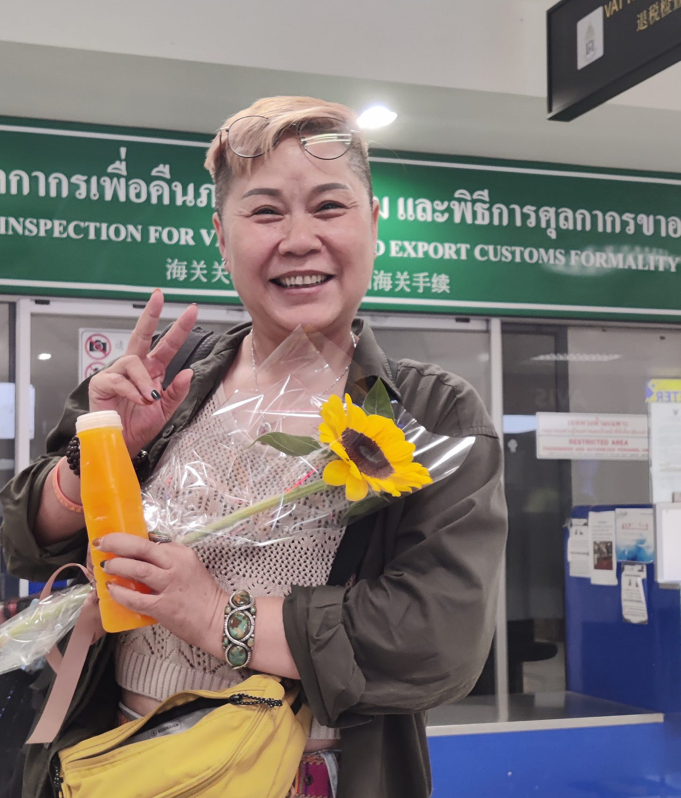
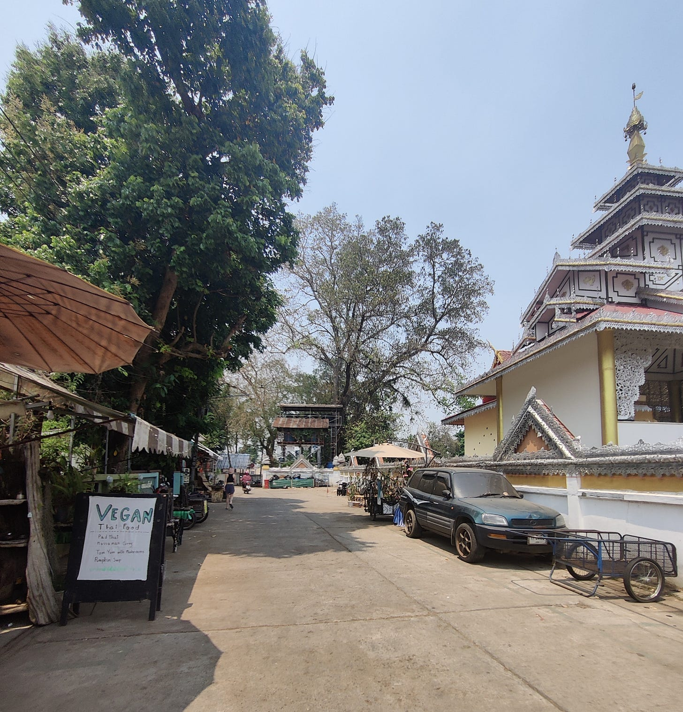
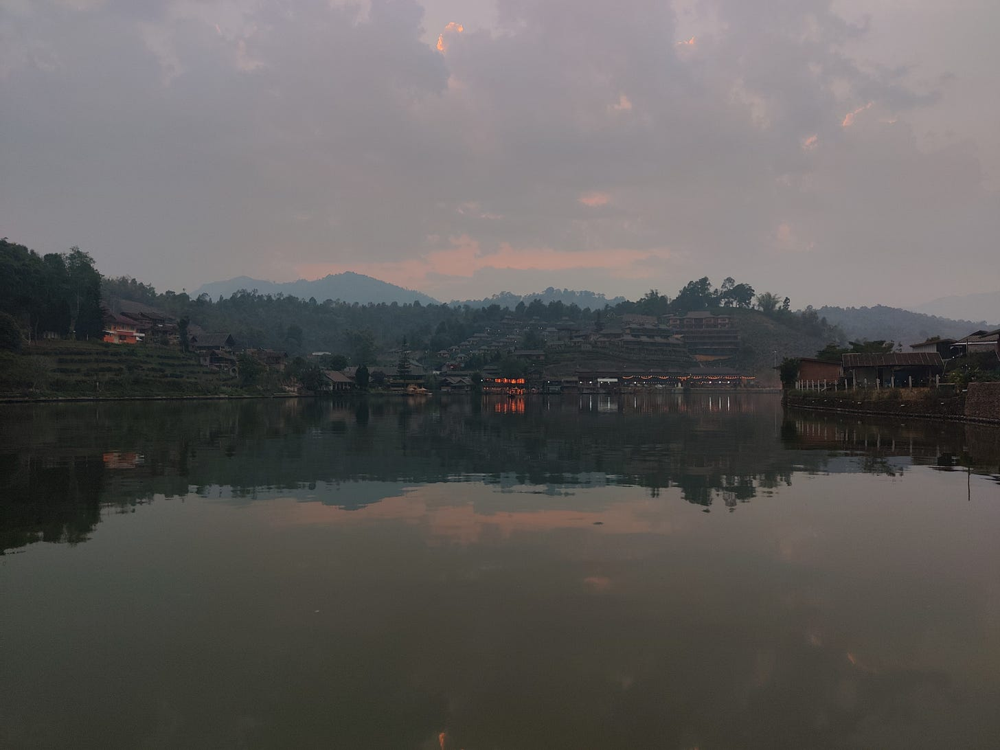
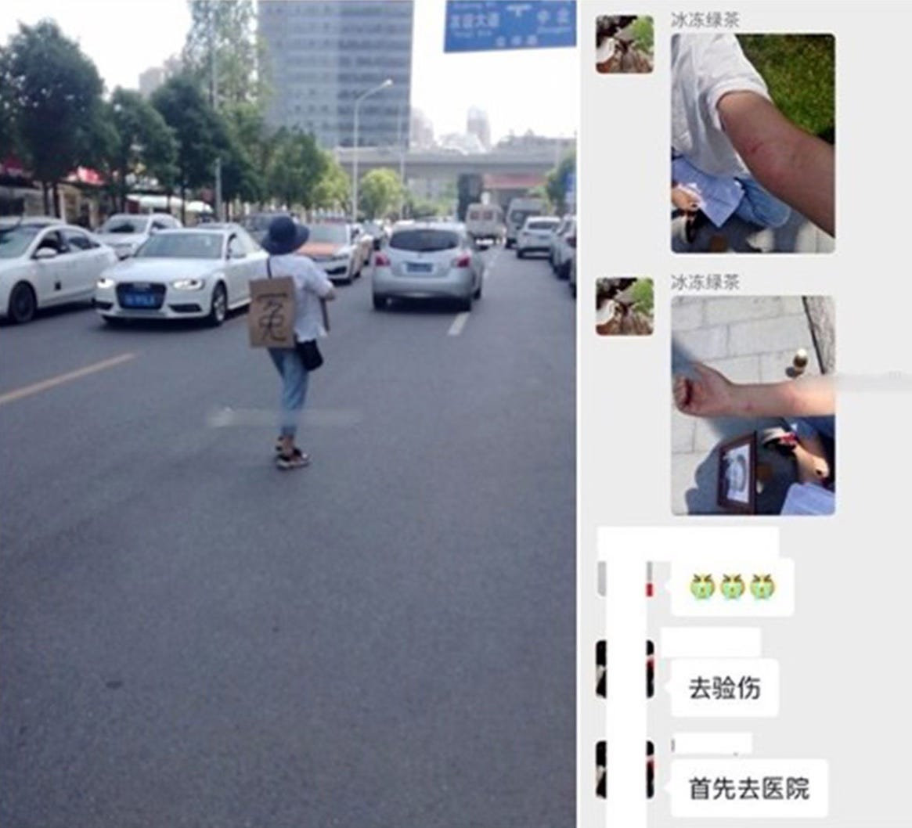
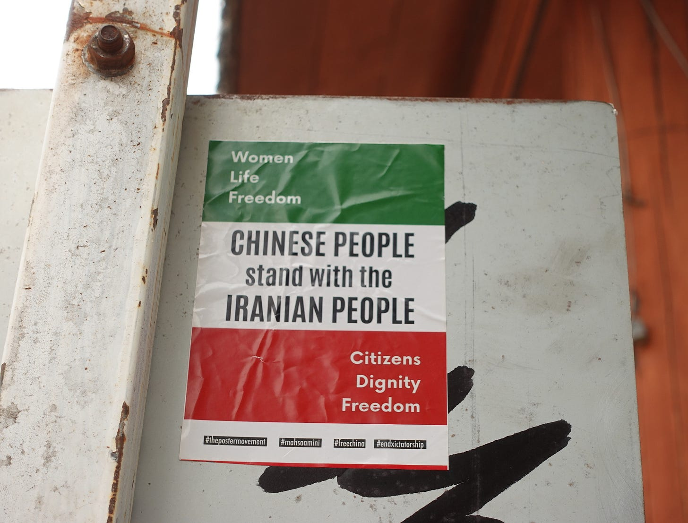
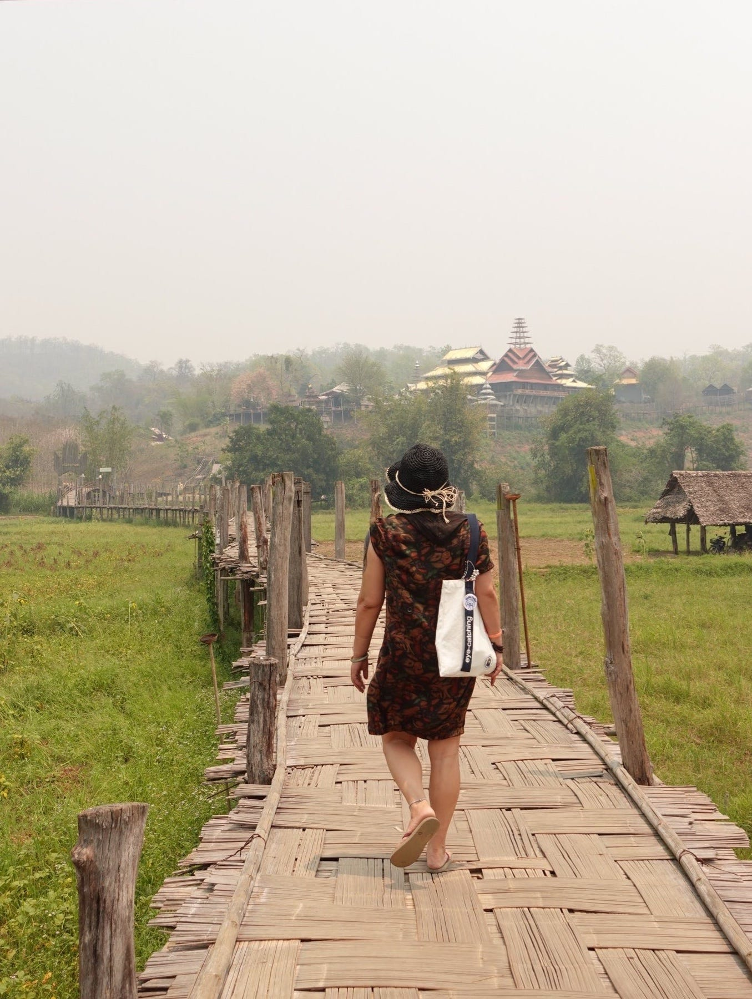

当52岁的新冠疫情遇难者母亲决定逃离中国 - WOMEN我们
杨敏在2020年的武汉疫情初期失去了自己的独生女。那天是2月6日，她的孩子和“吹哨人”李文亮在同一天去世。她坚信这是由于武汉政府的瞒报导致的，想为孩子讨个公道。从此她站到了体制的对立面，并在三年之后踏上了充满未知的去国之旅。
Dec 06, 2023

撰文 俞组
编辑 阿西米
你为什么会离开中国？你要怎么离开？你是否想象过你离开之后会过上一种什么样的生活？
当“润”变成这个时代的关键词，这些问题可以抛给很多中国人，也许是一个中产人士、一个码农、一个学者、甚至是一无所有但有着“润”的决心的年轻人。
但杨敏看起来和这些问题完全无关。她52岁了，过往的人生几乎都是顺风顺水过来的。她在20岁的时候遇到自己的丈夫，并开启了一段自己非常满意的婚姻。她和丈夫的工作高度依赖体制，退休之前，她在武汉市民政部门下一个养老院工作。在那个带着花园般院子的家里，她养了许多植物和家禽。这是一个典型的、令人羡 慕、享受着体制红利的中国式家庭。
但在52岁这一年，一个在传统意义上即将要安享晚年的阶段，离开中国突然变成了她的人生命题。
她在2020年的武汉疫情初期失去了自己的独生女。那天是2月6日，她的孩子和“吹哨人”李文亮在同一天去世。她坚信这是由于武汉政府的瞒报导致的，想为孩子讨个公道。从此她站到了体制的对立面。
2022年快要结束的时候，中国疫情防控政策突然转向了，人们终于可以随意流动，国门和边境打开了。杨敏在这时得到了一个偶然的机会，她从武汉坐上了一辆开往老挝的轿车。尽管一路都被追踪和监控，但她竟然顺利离开了中国边境，进入老挝，又一路去往泰国，并在泰国为之后申请荷兰的政治庇护做准备。
离开武汉，离开中国，流亡就真正开始了。我们试图记录下她一路上的经历：一个受害者和幸存者如何与过去的伤痛共处，一个愤怒的母亲如何反击周遭的环境，关于一个独自在外的普通中年人面对的无措……
她会成功逃离这一切，到达理想中的欧洲大陆吗？

Figure 1: 泰北小城拜县街景
清迈纹身
杨敏出现在清迈的时候是2023年四月份。那个傍晚，年轻的朋友骑着摩托车载着她，她没有戴头盔，上午，她刚刚把头发漂染成粉橘色。
摩托车在一家纹身店门口停下来了。杨敏有一个心愿，她想把女儿的照片纹在身上。
小雨，她的独生女，在武汉疫情初期去世时24岁，刚工作不久，成年之后的人生，才刚刚展开。
那是2020年春节，杨敏和女儿同时在武汉协和医院治疗乳腺癌。小雨是1月16日在医院被感染的，19日开始出现发热和高烧不退等症状。
同一天，中国国家卫生健康委员会还在通告中表示“当前疫情仍可防可控”。人们沉浸在即将过年的气氛里。
1月20日，病毒学领域研究专家在接受《财新》采访时指出，“目前武汉肺炎发展轨迹与当年SARS疫情相像，应该引发高度关注”，但遭到许多网民的嘲笑。直到这一天晚间，钟南山接受中国中央电视台采访时表示，新型冠状病毒肺炎“可能人传人”，疫情才进入公共视野。
2020年1月25日，小雨几经周折住进了金银潭医院。她事后回忆女儿的状态：“卧床不起，喝水困难，排泄得不到清洁，咳血，血氧浓度急剧降低”，她去照顾住进icu的女儿，“看着她张大嘴巴去呼吸，就像把鱼从嘴里捞出来一样，无法呼吸”。没过多久，她自己也住进了ICU，“每一口呼吸都要用尽全身力气，肺里有 玻璃渣一样咯得疼”。
小雨最终在2月6日去世。十多天后，杨敏脱离危险从ICU病房转出来，丈夫才告诉她这个消息。
杨敏给纹身店老板娘看自己要纹的照片，她的呼吸变得缓慢起来，每一下都重重的。老板娘没有多问，只说“您放心，我们一定会好好纹的”。老板娘后来聊起，纹身师的弟弟在前几年丧生，因为凶手的权势和泰国政府的腐败，凶手几乎没受到惩罚。他悼念弟弟的方式是把他纹在了胸口。
杨敏手里女儿的照片不多，她提供的几张照片角度都不一样，纹身师综合了几张照片，最终画出一张像在纹身前给她看。看着画像的时候，杨敏怎么看都不太对。妈妈会记得女儿脸上每一个细节：眼睛是丹凤眼呀；眼尾要长一点；颧骨要高一点；她的下嘴唇没有那么厚，是薄薄的……年轻的朋友N在旁边说，“要不要给 小雨爸爸也看一下”，杨敏立马摆摆手，“他看不得这些”。
N后来想，这种犹豫也许是一种真正的离失，三年来，女儿的面貌就这样日渐模糊。
杨敏很少讲起2020年发生的事情。但只要不提起武汉，杨敏大多数时候看起来都充满活力，尤其是刚来到清迈的这些日子，她和年轻人随意坐在街边聊天，没有监控，没有追踪者，她感受到久违的自由与放松-–—不久之前，她还为了一个日本关西电视台的采访，在武汉的公园里绞尽脑汁地甩掉跟踪她的便衣警察，她和记者坐在公园的椅子上聊天，看着警察伪装成锻炼身体的人，拿着信号干扰器在公园步道上走来走去地乱挥。
纹完的那几个夜晚，她去二手商店，看中了一款可再生材料的双肩背包，她用手语跟泰国老板来还价，她模仿小鸟，说自己后天就要飞走了，老板真的让了价。
还有三天，她就要离开清迈，去往荷兰申请政治避难。她买了一张中转荷兰落地厄瓜多尔的机票。自从厄瓜多尔开放对中国护照的落地签后，去往厄瓜多尔“走线”的中国人在这几年里不断增多。杨敏的计划是在荷兰中转时直接下机，在荷兰机场申请政治庇护。
她买更多的衣服和包。她努力使自己看起来像一个悠闲又有钱的游客，这样更容易顺利上机，而不是被当成偷渡者被拦下来。

Figure 2: 杨敏的泰北之行中抵达的最北部的村庄，是一个云南人后裔和国民党孤军后裔聚集的华人村落。
逃往国境之南
“真的不敢相信我已经逃出来了，有时候好像没有晃过神来一样”。今年3月，她跟随一辆私家车从武汉出发，朝着西南方向，一路驶过贵州省和云南省，在云南省出境到了老挝。
女儿去世的头一年，日子很不好过。她在家里抱着照片，总是想起过去很多平常的时刻：女儿经常冲她撒娇、喊妈妈烧虾子吃，喜欢的烤肉店出了新品，一定要第一时间拉着妈妈一起去吃，女儿给爸爸换了手机铃声……
她微博名叫“哭泣的亡魂”。但常常被删帖，她在微博上发脾气，诅咒预设的语境是“反贼”式的：“谁再删我的帖子，我祝你下辈子还投胎到这!”
2020年4月4日，武汉举行了默哀活动，中国政府网上只用一句话就概括了这天：“湖北武汉和全国各地群众静立默哀。汽车、火车、舰船与防空警报同时鸣响”。 几天之后，被封锁了76天的武汉终于迎来了解封。这也意味着，小雨终于能出殡了。
那段时间，杨敏憋在家里，给武汉市相关部门写了一封诉状，要求政府公布疫情真相。但一直到五月，她也没有收到任何回音。
5月1日是小雨的生日，紧接着没过几天又是母亲节。每一个日子都让她心碎。
5月11日，杨敏走上了街头。她背着女儿的照片和纸板上街去喊冤，纸板上写着“政府隐瞒疫情真相”“还我女儿”，她想一路走到信访办，但在门口，她的纸板被警察抢走，后来流传的一段视频里，杨敏一直在与警察拉扯，“我是中国人，（纸板）是我的私有财产，你们不能抢走我的东西”。
后来被中国当局抓捕、获刑4年的公民记者张展原本与杨敏约好第二天再次见面，但她没有再等到杨敏，而在她们约定见面的市委门口，停了许多警车。
杨敏从此成了当地政府的“维稳对象”。她被网格化管理了，之后的三年里，几乎一到敏感日子，或者武汉政府发现她与外媒记者联系，就有便衣警察在家楼下守着。就连家门口卖包子的小摊贩，都是社区和警方安排来监控他的-–—杨敏什么时候出门、什么时候回家，卖包子的男人都会“通风报信”。这是她自己偶然间发现的，其中一个佐证是，那里原本是一个禁止摆摊的区域。后来她还听说，那些在楼下蹲守她的人里，也有一些人原本是上访户。
她有过激烈反抗的时刻，有过很多令她骄傲的、与跟踪她的便衣警察斗智斗勇的时刻，当然也有因为看不到希望、意志消沉的时刻。到最后促使她产生强烈地想要逃离的一个原因是，走出家门，她看街上每一个人像便衣，每一个摄像头都在跟着她转，整个世界好像都在天旋地转。
三月，她在一次聚会上偶然听说有朋友要自驾去老挝。这是一个可以赌一把的计划。
从2022年10月的四通桥事件开始，新疆、广州、兰州等城市都相继有过不同形式的反抗活动，网络上也流传着越来越多被冲毁的栅栏的图片，在武汉街头，黄色的围挡被人推倒在地，一只喇叭躺在地上，还在发出机械重复的声音，“请大家打开健康码”。一个月后，“白纸革命”此起彼伏。没过几天，原本固若金汤的防疫政策奇迹般地松动了，中国政府放弃了清零政策，边境和国门打开了。
从聚会到真的出发那天，只有短短一周。她几乎没有做任何事情，她像往常一样正常地出门，尽量不引起人怀疑。
车子刚开出武汉，她就接到了警察的电话，对方倒是很客气，先是问她“杨阿姨，你是不是出武汉了”，然后又问她目的地是哪里。她拿出武汉妈妈的泼辣劲儿开始瞎扯，“你拿钱来我就告诉你。”等到下午五点半，她果断抽掉了自己的手机卡，一路上，她没有使用过身份证，警察很难再判断她的行踪。
车子一路开了三天，一刻也不敢停，杨敏事后回想，有很多运气叠加在一起，她赶在警察下班的窗口期到达边境，这也许造成了她的材料来不及被同步给边检部门。武汉警察也许没有想过，她会决绝地丢下在中国的家人离开-–—他的丈夫仍然在体制内工作，退休之前，他无法拿到自己的护照。

Figure 3: 前半生在中国的主流、岁月尽好的生活和边缘维权岁月，都像相机中留下的截图一样日渐模糊。
武汉维权家属
年轻的朋友N第一次见到杨敏的时候是在2020年，很多疫情遇难者家属看起来都一样，“坐在一起，有一种头也抬不起来的悲伤”。
在维权家属群体里，大家的诉求也不是一样的。杨敏曾经接触过一个三十多人的家属群，她原本约好了跟对方见面，想去教其他人安装和使用signal之类的安全软件-–—这些新鲜事物都是她在维权之后“被迫”学习的-–—但她后来得知，这些家属里，有人的诉求是政府为逝者的墓地买单，或者应该给疫情逝者优惠价；有人觉得既然武汉是英雄的城市，就应该给逝者们英雄的待遇，“说来说去，他们不是在为了家属的生命上访”，杨敏觉得，大家不是同路人。
在武汉，另外一位逝者家属张海一直在公开场合和她一起控诉武汉政府瞒报。张海的父亲在同样在疫情初期去世。2022年初，杨敏和张海实名发表了致习近平的公开信，要求追查隐瞒疫情官员的法律责任，并向受害者家属道歉。两人也在2023年初公开支持了武汉老人抗议医保改革一事。但没过多久，今年2月，张海失联了，至今毫无消息。
小雨刚走的那段时间，杨敏在微博上为女儿喊冤，并不是所有网友都能共情丧子之痛，一些人认为她不该把女儿逝世的痛转变为攻击武汉政府的武器，最常见的论调是“在天灾面前，政府也不容易”，甚至有人说她是反华境外势力。杨敏在评论区里讲，过去她也非常爱国，会因为听到国歌而泪流满面，会在泰国旅游的时候萌生很强烈的民族自豪感。原来这种情感在今天被用来反对她的哀痛，她的哀痛在宏大的叙事中失去了合法性。
过去许多年，这个家庭都依赖着中国共产党建立起来的庞大体系生活。杨敏年轻时候进入了铁路系统，后来下海经商，几年之后又进入了民政部门下属的一个养老院工作，到她因为女儿去世提前办理内部退休时，她是这家养老院的院长。有一次她染了新发型，全单位的人都说好看，但女儿跟她说，“你要是不当官，你看那些人还夸不夸你”。
但失去女儿之后，在理直气壮的悲痛和虚无感中，她成为自己受益的那个系统的公敌。不同级别的负责人借着“上门慰问”的名义试图阻止杨敏继续公开发声。这些人曾经是丈夫的同事、是老熟人、是看着她的女儿小雨长大的叔叔伯伯。她的丈夫被夹在组织和家庭之间斡旋，杨敏一闹出上门动静，电话就 打到丈夫那儿去了。
她跟那些拿着钱来“慰问”的人讲：“我现在不管武汉是不是英雄的城市，也不管什么境外的阴谋。说到底我的孩子是被你们害死的，是谁害死了她，你们起码要给我一个交代。如果你们不承认这个前提，我收你们的钱就算敲诈”。
她有着武汉女人的泼辣天性，有一股子谁都不怕的劲儿。她从不怀疑自己要的那个说法的正当性。有些时候，年轻的便衣们跟踪她被她发现，两人一对视，也会露出不好意思的笑。也有警察跟她说，“我不是不知道自己在干脏活，但我没办法，我要养家”。

Figure 4: 泰北旅游途中看到的声援伊朗人民的贴纸。
拜县：自由鸟和“嘎腰子”
临去荷兰前的有一天早上，杨敏忽然觉得在清迈的日子很无聊。她无所事事地去街上晃荡，清迈的街景看起来和武汉差不多。她不喜欢泰国食物的酸辣，而是想念武汉家中充满锅气的炒菜。在清迈，她每天都走进一家兰州拉面馆，点一碗面，再问问中国来的店主今天有没有咸鸭蛋。
她提出想出去转转。于是年轻的朋友N租了一辆车，一段没有攻略、没有目的地的自驾游就这样开始了。
N是一个人权活动家。这是一个在中国无法被公开提起的身份，许多人权律师和公民记者都走向了流亡海外或身在狱中的结局，而TA幸存下来。直到今年，TA也离开中国暂避风头。
幸存的背后也是巨大的代价。长期以来TA过着一种居无定所、隐姓埋名式的生活，为了减少信息泄露和被监控的风险，TA不使用任何国产软件。TA像一阵风，总是突然出现在朋友面前，又突然消失，甚至是一些较为亲密的朋友，也不知道TA的真实名字和更多的信息。TA的职业生涯如同白纸一样。最近几年，TA还彻底戒掉了微信-–—在中国，微信的意义早已经不止是一款通讯软件-–—将自己从系统里摘出来。
N和杨敏，两个离散的人，在清迈相见了。
这趟旅程从一家叫做“自由鸟”的餐厅开始，这是一家支持缅甸人民反对军政府的素食餐厅。在餐厅的前台，她们发现一些来自中国的贴纸，一张贴纸上写着四通桥横幅上的宣言，一张贴纸上被印了抗争者的影像，旁边的文字是“与你一起抗争我很愉快”，一张贴纸上写着“和维吾尔族人民 (新疆人民/台湾人民/乌克兰人民) 站在一起…….”贴纸旁边是一个捐款箱，箱子上用五种语言写了“自由”这个单词，中文的“自由”在其中显得巨大无比。
杨敏拿了几张贴纸在身上，又往捐款箱里投了许多老挝币，走出门没几步，她想了想，以后都用不上了，她索性把钱包里的所有老挝币都放了进去，一大把纸币占了箱子很大的空间。
这些贴纸后来被她们贴在了拜县的许多电线杆上。一群欧洲人看见了贴纸上的字，对她们说“We support you”。在电线杆下，她们聊起在没有监控的地方上街贴贴纸是一件令人多么安心的事情。过去的几次见面，杨敏从来没有看清过N的长相，为了躲避满大街的监 控，N见人都带着口罩。
她们往泰国北部开。N有着丰富的驾驶经验，还在中国的时候，为了逃过监控和追踪，TA不乘坐公共交通，也不愿意为了乘坐公共交通而做核酸，几乎所有的出行都是靠自己驾驶，甚至包括那些往返中国南北6000多公里的行程。车是流动的家。
车子行驶在弯弯绕绕的山路上，杨敏在畅想去到荷兰之后的日子：谋生的方法有很多，也许可以在当地帮人包饺子、或者开一家中餐馆，有钱之后可以建立一个据点，帮助更多和她一样的人在荷兰站稳脚跟。就算赚不到钱，荷兰政府会教会避难者们当地语言，每个月会发一些生活费，这让她几乎没有什么压力。
选择荷兰作为终点，很重要的一个原因是这里福利好，她不用再担心养老的问题。她常说的一句是，“在国内，我们没有孩子了，有再多钱也没用。”
这种新生活就在眼前的希望让她终于能像个游客一样享受这段旅程。她坐在被布置得像花园一样的早餐店里点了一份英式早餐，然后给国内的朋友-–—也是曾经和她一起维权的伙伴-–—打视频电话，让人也赶快出国来。那段时间，“来泰国会被嘎腰子”的谣言在国内的互联网上大肆流传，朋友从来没有出过国，她将摄像头对着自己刚点的鲜榨橙汁炫耀了一番，对谣言不屑一顾，然后说“泰国安全得很”。很多时候，她分享自己出来之后的日常，是想告诉朋友们，国外的生活不是洪水猛兽。
在拜县，她还在一个酷似吉普赛人的摊位上买了一套绿松石戒指和手镯，她跟摊主还价，让摊主买大的送小的，摊主惊讶地抱头，这场还价持续了一个多小时，一旁的白人也来围观她砍价。买完镯子回旅馆的路上，她讲起自己原来有一对翡翠镯子，其中一只在女儿手上，一同火化了，另一只她自己带着，出国前，她把这只镯子送给了自己的侄女，她想如果能出国，就再也不回去了，要给小辈留一点念想。
Figure 5: 泰北旅行途中遇到的大峡谷。
吉隆坡：无措时刻
4月下旬，杨敏出现在了吉隆坡。
她没能去成欧洲。临飞往厄瓜多尔的前一天，她们在网络上看到一些信息，自从厄瓜多尔对中国护照开放落地签之后，越来越多的人选择中转欧洲落地厄瓜多尔的航线，在荷兰跳机，荷兰移民局要求荷兰航空公司加强了对中国护照登记的审查。
第二天，杨敏果然在曼谷机场被拦下了。她不会英文，在机场柜台，她感受到一种百口莫辩的耻辱。当天她就返回了清迈。
那天是泰国泼水节开始的第一天，她听说泼水节是为了泼去人身上的污秽和不幸，她立马就出了门，往路人们的水管前一站，有一种豁出去了的架势，急切地让水泼在自己身上。
因为上机失败，她不得不留在清迈更长时间来做打算。在国内的社交平台上，吉隆坡被推荐为境外办理泰国旅游签的首选城市。每一年，都有大量的中国人频繁往返泰国周边的城市办理旅游签，通过这种方式来不断延长自己在泰国的停留日期。
杨敏当初出来的时候，除了想到要去欧洲跳机，其余什么计划也没做。但也正是因为这种近乎莽撞地决绝，她才走到了今天。
N早先联系上杨敏的时候，她正在琅勃拉邦无所事事，琅勃拉邦太热了，她正想换一个地方。TA能感受到杨敏有一些焦虑，信息里频繁出现“怎么办”。如今，初到国外的新鲜和自由劲儿也渐渐在消失，生活中越来越多具体的困境浮现出了水面。
她今年52岁了。和那个世代许多人一样，网络世界里许多事物让她感到陌生，杨敏不知道如何买机票，这路上每一趟都需要随机找身边的年轻人帮忙。听不懂外语-–—对方越听不懂，她越习惯性讲字正腔圆的中文来回应对方，但幸运地是，她手舞足蹈般的比划在很多简单场景里都能起到沟通的作用。不会使用谷歌地图，她靠 着自己的脚来熟悉住处周围的街道……
最要命的和最紧急的是签证问题。签证材料让她头疼，身边的年轻朋友要么列清单给她，要么直接把材料准备好，她反复确认，要每一项材料都多打印三份才安心。
这种无助和无措贯穿了她的逃亡之路。入境泰国之前，她不知道如何办理旅游签，原本只需要几百块钱能解决的事情，中介一口报价四千多人民币，她感到好无奈，“要是我的女儿还在我身边，她一定不会让我这么无助。”最终她使用落地签进入了泰国。
在吉隆坡办理泰国旅游签的时候，她的焦虑几乎到达了顶峰。
几乎每一个环节都不顺利。大使馆工作人员指着她带来的翻译问，“她是你的女儿吗，只有丈夫和女儿才能陪你进去”。翻译不忍心把这句话转述给她听。
在递签大厅，她靠着来办签证的中国女生帮忙，才找到了自己的窗口，随即又遭到了签证官的刁难，几项材料被打了回来。她跑到了使馆外的打印店让老板帮忙翻译，又回来询问能不能再次递签。签证官不耐烦地赶走她两次，但在下班前，还是收走了她的材料。
走出使馆的时候，她跟身边的年轻朋友说，她认为国外的行政部门这一点还是很好，只要材料没问题，最终还是会让你办成事。
那段时间，她反复想起女儿，想起自己在ICU的时候，是靠着“不能丢下丈夫和女儿”的意念捱过来的，她觉得女儿不够坚强，毫不牵挂地就这样丢下她走了。
她少见地主动提起对生命的感觉。后来她再也没复查过自己的乳腺癌，“活着也行，死了也行”。她信轮回，信自己上辈子造了孽，这辈子活着就是还债，而这辈子不解决的问题，还会轮回到下辈子。

荷兰着陆
从吉隆坡再次回到清迈之后，她半夜不睡觉刷短视频。白天，杨敏给朋友们打电话时候的语气也越来越重了，到后来直接扔下一句“你要是无法下定决心出来，你就一辈子和那片土地上的烂事打交道”。N觉得杨敏既是在劝朋友，也是在反复跟自己强调这句话。
但她还是打起精神做了很多事情。
她报了一个英语班。第一节课上了团课，同学几乎全是中国人-–—由于泰国语言班价格便宜，且提供三个月到十五个月的教育签证，语言班已经成为中国许多年轻人低成本“润”出国的途径。由于最近几年中国愈来愈收缩的环境，也有大量的欧美外教从中国离开，来到了东南亚。
但团课对杨敏来讲实在太困难了，改成了一对一的课程。几乎每一天上午，她都坐在出租房的户外桌上，小声地念刚学过的英语短句，从“nice to meet you”开始。
关上门一个人在室外学习，还有一个原因是她很怕打扰同住的年轻朋友的生活。刚住在一起的头几天，她每天起大早出门逛市场，晚上再回家，就是尽可能不给年轻人添麻烦。 N跟她说，我们要放弃中国传统社会里那套相处模式，没有长辈和小辈，没有谁一定要照顾谁。
因为不知道何时才能有去欧洲的机会，杨敏决定先办理泰国的养老签。她每天去清迈移民局门口询问会说中文的志愿者，自己一点点准备材料，这一次，完全靠着她自己，成功办下了签证-–—相当于泰国的长期居留证明。这里物价低廉，又有着数量庞大的华人群体，许多做生意的泰国人也能讲上几句中文，相比遥远的荷兰，这也 许是一个她更容易融入的国家。
但她无法安心留在这里。泰国离中国太近了，她感到心慌。一直到今天，武汉警方还在坚持找她，她的通话记录里有长长的未接记录，每天一通，全部来自武汉警方。
她的身体情况也不算好，来清迈几个月之后，她咳嗽越来越严重，去医院检查，医生跟她说，她最好立即就做手术。
在泰国做手术需要自费。这逼得她想尽快去荷兰，因为在荷兰能接受免费医疗。她那时也许也动过回中国的念想，毕竟，她从来没有离开家这么久过。
她找到了另外一条线路：先去土耳其，再到塞尔维亚，像一个观光客那样，在塞尔维亚结束旅程，买票回北京，而这条线路的航班依旧是中转荷兰。
她决定无论无何再试一次。
上一次临去荷兰前，年轻的朋友们把她送到清迈的火车站。她们紧紧拥抱，开玩笑地说日后“苟富贵，莫相忘”。这一次，杨敏草草收拾完了自己的行李箱，自己叫了车去机场。
一个年轻的朋友拦下了杨敏准备扔掉拖鞋的动作。杨敏想了一下，把鞋又放回了鞋柜前。或许在内心深处，大家都保留了一些期待，哪怕再失败，还是希望杨敏能回来这里而不是中国。
荷兰时间6月15日早上9点，杨敏抵达了荷兰阿姆斯特丹，随后开始了庇护的流程。七月，年轻的朋友们得知，她已经在荷兰安定下来，正在某个医院接受治疗。杨敏没有透露太多近况，只说自己一切都很好。至此，她终于真正离开了中国。